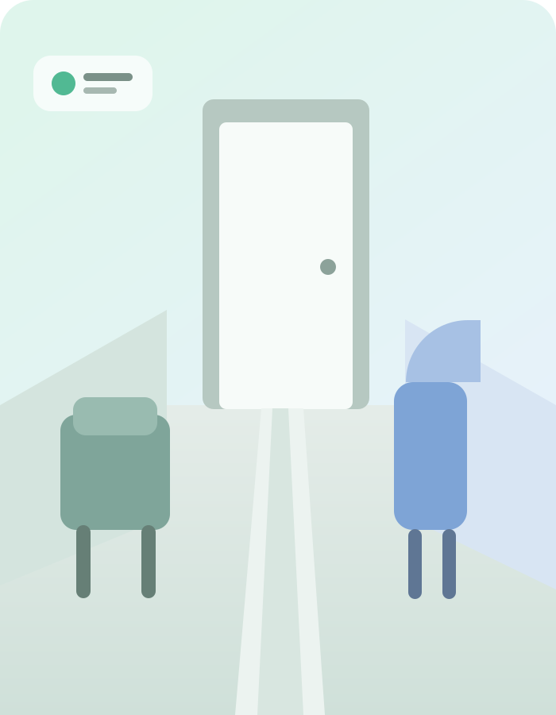

অ
Bangla-first interaction
Natural Bangla phrases can map to a small set of reliable intents, reducing the need to navigate complex menus.
Language layerA voice-driven visual assistant for blind and visually impaired people, designed around Bangla interaction, on-device intelligence, low-friction use, and measurable safety.

সামনে একটি দরজা, বাম পাশে চেয়ার।
Rewoo Vision keeps command recognition deterministic and uses multimodal AI where visual reasoning actually adds value.
Natural Bangla phrases can map to a small set of reliable intents, reducing the need to navigate complex menus.
Language layerDifferent intents can use specialized prompts for front-scene description, object identification, text reading, and hazard awareness.
Multimodal AIOn-device processing reduces network dependency and keeps the privacy surface smaller than cloud-first image workflows.
PrivacyVAD / keyword spotting can trigger a deterministic intent router before the camera and vision model are invoked.
Low frictionWhen evidence is unclear, the assistant should say so instead of inventing confidence or unsupported exact distance.
TrustCore non-camera intents like repeat-last and stop-speech keep basic control immediate and predictable.
Accessible UXKeep the always-on workload lightweight. Open the camera only when a visual intent needs it, answer briefly, then resume listening.
Lightweight microphone stream detects a supported command.
Map the phrase to a deterministic intent such as DESCRIBE_FRONT.
Open the camera, capture an event frame, then close it.
Run visual reasoning with an intent-specific instruction.
Return a concise Bangla response and resume the listener.
The first milestone is reliability, not vocabulary size. Multiple natural phrases can map to the same safe intent.
Rewoo Vision shifts visual assistance from controller-led interaction toward natural Bangla voice with a deterministic intent layer.
These numbers are proposed targets from the current project notes, not achieved results.
Curated cases can isolate whether the weak point is command spotting, visual reasoning, OCR, or language output.
A monocular vision-language system can miss obstacles, estimate depth poorly, hallucinate, or respond late. The product should preserve that boundary clearly.
Environmental awareness, scene description, object identification, text-reading support, and voice-first interaction.
No cane replacement, guaranteed obstacle detection, exact distance, or autonomous safe navigation.
Prioritize hazards, communicate uncertainty, avoid invented precision, and provide a clear fallback.
Each phase removes one uncertainty before adding more complexity.
Camera + multimodal model + Bangla TTS works.
Five fixed intents with lightweight command spotting.
Primary flow works without screen touch.
15 → 30 → 60 minute reliability checks.
Bangla text testing and accessible interaction semantics.
Noise, lighting, devices, and controlled user testing.
Start with a disciplined assistive core. Expand only after the product survives real Bengali interaction and visual benchmarks.